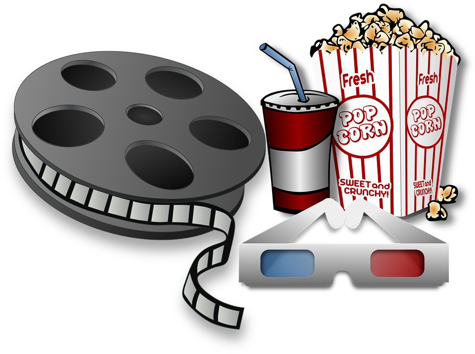

<!DOCTYPE html>
<html lang="en">
<head>
    <meta charset="UTF-8">
    <meta http-equiv="X-UA-Compatible" content="IE=edge">
    <meta name="viewport" content="width=device-width, initial-scale=1.0">
    <title>kino</title>
    <link rel="icon" href="favicon.ico">
    <link rel="shortcut icon" href="favicon.ico" type="image">
    <link rel="stylesheet" href="style.css">
    <link href="https:fonts.googleapis.com/css?family=Roboto:400,900&subset=latin-ext" rel="stylesheet">
</html>
<body>
    <div id="contanier">
        <header>
            
        </header>

        <nav>
            <a class="menu" href="glowny.html">główny</a>
            <a class="menu" href="cennik.html">cennik</a>
            <a class="menu" href="kontakt.html">kontakt</a>
            <a class="menu" href="terminarz.html">terminarz</a>
            <a class="menu" href="informacje.html">informacje</a>
            <a class="menu" href="onas.html">O nas</a>
        </nav>

        <section>
            <article>
                <h1>O nas!</h1>
                <iframe src="https://www.google.com/maps/embed?pb=!1m18!1m12!1m3!1d2478.117463969867!2d18.93096115139252!3d51.60273627955108!2m3!1f0!2f0!3f0!3m2!1i1024!2i768!4f13.1!3m3!1m2!1s0x471a5b6382c2c093%3A0x2d6e66b85216fd9c!2sRatusz%20Zdu%C5%84ska%20Wola!5e0!3m2!1spl!2spl!4v1650913602736!5m2!1spl!2spl" width="600" height="700" style="border:0;" allowfullscreen="" loading="lazy" referrerpolicy="no-referrer-when-downgrade"></iframe>
                <p></p>
                <p><font size="7"><strong>Regulamin</strong></font></p>
                <p>
                    Na terenie Kina obowiązują następujące przepisy:
Zakup biletu jest równoznaczny z wyrażeniem zgody na przestrzeganie niniejszego Regulaminu.
Bilety możliwe są do nabycia w kasie kina oraz poprzez zamianę na bilet Voucheru Podarunkowego.
Voucher podlega wymianie na bilet na dowolnie wybrany seans. W cenę voucheru nie są wliczone okulary 3D. Voucher na bilet wymienić należy w kasie.
Wejście na teren sali kinowej możliwe jest jedynie po okazaniu ważnego biletu.
Bilet ważny jest jedynie na wyznaczony na nim seans, dzień i godzinę.
Jeden bilet uprawnia do udziału w seansie tylko jedną osobę.
Bilet należy zachować do ewentualnej ponownej kontroli przez cały czas trwania seansu, na jaki jest zakupiony.
Miejsce na sali należy zajmować zgodnie ze wskazaniami na bilecie.
Bilety ulgowe przysługują uczniom, studentom do 26 roku życia, emerytom i rencistom za okazaniem legitymacji.
Nabycie biletu ulgowego przez osobę niepełnosprawną następuje na podstawie okazania dokumentu (zaświadczenia, legitymacji) potwierdzającego niepełnosprawność. Opiekunowi osoby niepełnosprawnej nie przysługuje prawo do ulgi.
Bilety uczniowskie lub studenckie przysługują uczniom i studentom za okazaniem ważnej legitymacji przy wejściu do sali lub przy kasie biletowej.
Legitymacje studenckie, uczniowskie, dowody osobiste sprawdzone są wraz z biletami przy wejściu na salę lub przy kasie w momencie sprzedaży biletu.
Przy zakupach biletów grupowych w cenie zakupu biletów grupowych przysługują zaproszenia dla opiekunów.
Zwrotu lub zamiany biletu zakupionego w kasie kina można dokonać najpóźniej 30 minut przed rozpoczęciem seansu na jaki został on zakupiony, okazując bilet wraz z paragonem fiskalnym. Zwrot lub zamiana biletu możliwa jest również w przypadku odwołania lub zmiany w repertuarze terminu seansu, jak również opóźnienia lub przerwy w jego emisji dłuższych niż 30 minut. Okulary 3D nie podlegają zwrotowi.
Godziny rozpoczęcia seansów określone w repertuarze, cennikach (oraz innych reklamach i ofertach) określają czas rozpoczęcia emisji bloku reklam i zwiastunów filmowych, po zakończeniu którego rozpoczyna się emisja filmu.
Na terenie Kina Ratusz obowiązuje całkowity zakaz wnoszenia przedmiotów niebezpiecznych (broni, środków trujących, ostrych narzędzi, materiałów łatwopalnych) oraz wnoszenia i spożywania środków odurzających i psychotropowych.
Na terenie Kina Ratusz obowiązuje całkowity zakaz fotografowania i filmowania oraz wnoszenia na sale kinowe kamer, aparatów fotograficznych i wszelkiego rodzaju urządzeń rejestrujących obraz lub dźwięk.
Osoby uczestniczące w seansie filmowym zobowiązane są do wyłączenia na czas jego trwania telefonów komórkowych oraz innych urządzeń emitujących światło lub dźwięk.
Na całym terenie Kina Ratusz obowiązuje zakaz palenia i korzystania z elektronicznych papierosów oraz urządzeń i przedmiotów o tej samej lub zbliżonej funkcji lub działaniu.
Osoby pod wpływem alkoholu lub środków odurzających nie będą wpuszczane na teren Kina Ratusz.
Na terenie Kina zabronione jest głośne zachowywanie zakłócające udział innych osób w Seansie lub Wydarzeniu, wprowadzanie zwierząt, za wyjątkiem psów przewodników dla osób niewidomych i niedowidzących, prowadzenie akwizycji, handlu i żebractwa, niszczenie mienia Kina oraz kładzenie nóg na fotelach kinowych.
Osoby niszczące mienie znajdujące się terenie Kina ponoszą pełną odpowiedzialność za wyrządzone szkody. Za osoby niepełnoletnie odpowiedzialność materialną ponoszą ich rodzice lub opiekunowie.
Pracownik obsługi kina ma prawo wyprosić klienta, który nie posiada przy sobie ważnego biletu lub narusza zasady określone niniejszym regulaminem.
Pracownik kina ma prawo odmówić wstępu osobie zachowującej się niekulturalne, niegrzecznie lub wulgarnie wobec klientów lub pracowników.
Wszelkie reklamacje dotyczące usług świadczonych w Kinie Ratusz należy zgłaszać niezwłocznie do managera kina. Reklamacje będą rozpatrywane w terminie 14 dni od dnia ich złożenia.
Na terenie Kina Ratusz nie obowiązuje szatnia
Usługodawca nie ponosi odpowiedzialności za pozostawione na terenie Kina ubrania wierzchnie oraz inne przedmioty.
Faktury wystawiane sa na podstawie paragonu fiskalnego najpóźniej trzy miesiące od czasu zakupu biletu
Zwrotu lub wymiany Biletu można dokonać wyłącznie do momentu rozpoczęcia się Seansu lub Wydarzenia, na jaki został on zakupiony, okazując nieprzerwany i niezniszczony Bilet wraz z paragonem fiskalnym lub fakturą VAT.
Nie ma możliwości zwrotu zakupionych Biletów po rozpoczęciu Seansu lub Wydarzenia, biletów przerwanych, zniszczonych lub bez paragonu fiskalnego lub faktury VAT.
Nie ma możliwości zwrotu biletu po częściowym udziale w Seansie lub w Wydarzeniu przerwanym z przyczyn zależnych od Klienta.
Zwrotowi nie podlegają Bilety nabyte na podstawie wcześniej zakupionych voucherów lub kuponów specjalnych.
Obiekt Kina jest monitorowany.
Klient może ponosić odpowiedzialność odszkodowawczą za szkody spowodowane zadymieniem na terenie Kina (np. poprzez palenie tytoniu) i aktywacją czujki pożarowej lub nieuzasadnionym użyciem urządzeń stanowiących system ostrzegania pożarowego, zainstalowanych na terenie Kina.
                </p>
                <a href="https://www.kinoratusz.com/cennik.php"><strong>źródło regulaminu</a>
            </article>
        </section>
        <footer>
            <p><a href="https://pixabay.com/pl/vectors/film-kino-prażona-kukurydza-koks-162029/"><strong>źródło wszystkich zdjęć</a></p>
        </footer>
    </body>
</body>
</html>